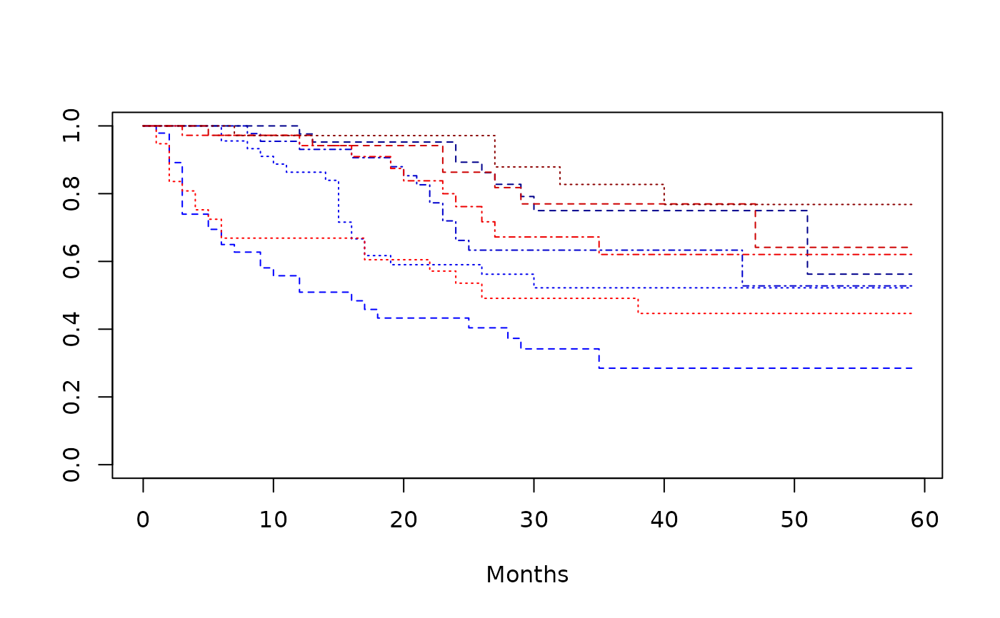

![[Stable]](figures/lifecycle-stable.svg)
Test and estimate the effect of a treatment in interaction with a covariate. The effect is estimated as the HR of the tested treatment for a given level of the covariate, in comparison to the treatment control.
Usage
h_coxreg_inter_effect(x, effect, covar, mod, label, control, ...)
# S3 method for numeric
h_coxreg_inter_effect(x, effect, covar, mod, label, control, at, ...)
# S3 method for factor
h_coxreg_inter_effect(x, effect, covar, mod, label, control, data, ...)
h_coxreg_extract_interaction(effect, covar, mod, data, at, control)
h_coxreg_inter_estimations(
variable,
given,
lvl_var,
lvl_given,
mod,
conf_level = 0.95
)Arguments
- x
(
numericorfactor)
the values of the effect to be tested.- effect
(
string)
the name of the effect to be tested and estimated.- covar
(
string)
the name of the covariate in the model.- mod
(
coxph)
a fitted Cox regression model (seesurvival::coxph()).- label
(
string)
the label to be return asterm_label(seereturn).- control
(
list)
a list of controls as returned bycontrol_coxreg().- ...
see methods.
- at
(
list)
a list with items named after the covariate, every item is a vector of levels at which the interaction should be estimated.- data
(
data frame)
the data frame on which the model was fit.- variable, given
(
string)
the name of variables in interaction. We seek the estimation of the levels ofvariablegiven the levels ofgiven.- lvl_var, lvl_given
(
character)
corresponding levels has given bylevels().- conf_level
(
proportion)
confidence level of the interval.
Value
A list of matrix (one per level of variable) with rows corresponding to the combinations of
variable and given, with columns:
- coef_hat
Estimation of the coefficient
- coef_se
Standard error of the estimation.
- hr
Hazard ratio.
- lcl,ucl
lower/upper confidence limit of the hazard ratio
Details
Given the cox regression investigating the effect of Arm (A, B, C; reference A) and Sex (F, M; reference Female) and the model being abbreviated: y ~ Arm + Sex + Arm:Sex. The cox regression estimates the coefficients along with a variance-covariance matrix for:
b1 (arm b), b2 (arm c),
b3 (sex m),
b4 (arm b: sex m), b5 (arm c: sex m)
The estimation of the Hazard Ratio for arm C/sex M is given in reference to arm A/Sex M by exp(b2 + b3 + b5)/ exp(b3) = exp(b2 + b5). The interaction coefficient is deduced by b2 + b5 while the standard error is obtained as $sqrt(Var b2 + Var b5 + 2 * covariance (b2,b5))$.
Functions
h_coxreg_inter_effect.numeric: Estimate the interaction with a numerical covariateh_coxreg_inter_effect.factor: Estimate the interaction with a factor covariate.h_coxreg_extract_interaction: a higher level function that returns the test of the interaction test and the estimated values. If no interaction,h_coxreg_univar_extract()is applied.h_coxreg_inter_estimations: hazard ratio estimation in interactions.
Examples
# Testing dataset [survival::bladder].
library(survival)
library(rtables)
set.seed(1, kind = "Mersenne-Twister")
dta_bladder <- with(
data = bladder[bladder$enum < 5, ],
data.frame(
time = stop,
status = event,
armcd = as.factor(rx),
covar1 = as.factor(enum),
covar2 = factor(
sample(as.factor(enum)),
levels = 1:4,
labels = c("F", "F", "M", "M")
)
)
)
labels <- c("armcd" = "ARM", "covar1" = "A Covariate Label", "covar2" = "Sex (F/M)")
formatters::var_labels(dta_bladder)[names(labels)] <- labels
dta_bladder$age <- sample(20:60, size = nrow(dta_bladder), replace = TRUE)
plot(
survfit(Surv(time, status) ~ armcd + covar1, data = dta_bladder),
lty = 2:4,
xlab = "Months",
col = c("blue1", "blue2", "blue3", "blue4", "red1", "red2", "red3", "red4")
)

library(survival)
mod <- coxph(Surv(time, status) ~ armcd * covar1, data = dta_bladder)
h_coxreg_extract_interaction(
mod = mod, effect = "armcd", covar = "covar1", data = dta_bladder,
control = control_coxreg()
)
#> effect term term_label level n hr
#> 1 Covariate: covar1 A Covariate Label 340 NA
#> armcd2/covar11 Covariate: covar1 1 1 NA 0.6341111
#> armcd2/covar12 Covariate: covar1 2 2 NA 0.5845305
#> armcd2/covar13 Covariate: covar1 3 3 NA 0.5507703
#> armcd2/covar14 Covariate: covar1 4 4 NA 0.6910643
#> lcl ucl pval pval_inter
#> 1 NA NA 0.1302825 0.988245
#> armcd2/covar11 0.3514676 1.144051 NA NA
#> armcd2/covar12 0.2716689 1.257692 NA NA
#> armcd2/covar13 0.2244668 1.351415 NA NA
#> armcd2/covar14 0.2315248 2.062715 NA NA
# Testing dataset [survival::bladder].
library(survival)
mod <- coxph(Surv(time, status) ~ armcd * covar1, data = dta_bladder)
result <- h_coxreg_inter_estimations(
variable = "armcd", given = "covar1",
lvl_var = levels(dta_bladder$armcd),
lvl_given = levels(dta_bladder$covar1),
mod = mod, conf_level = .95
)
result
#> $armcd2
#> coef se(coef) hr lcl ucl
#> armcd2/covar11 -0.4555312 0.3010803 0.6341111 0.3514676 1.144051
#> armcd2/covar12 -0.5369464 0.3909383 0.5845305 0.2716689 1.257692
#> armcd2/covar13 -0.5964375 0.4579624 0.5507703 0.2244668 1.351415
#> armcd2/covar14 -0.3695225 0.5579418 0.6910643 0.2315248 2.062715
#>
#> attr(,"details")
#> [1] "Estimations of armcd hazard ratio given the level of covar1 compared to armcd level 1."